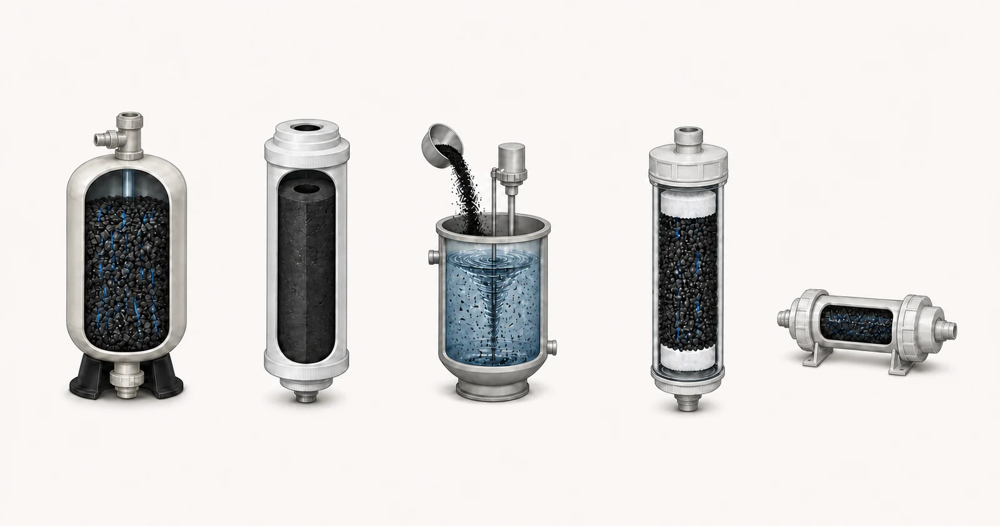

პირდაპირი პასუხი
GAC, CTO, PAC, UDF და T33 აღწერს სხვადასხვა მედიის ფორმებს, ვაზნების კონსტრუქციებს ან სისტემის პოზიციებს. GAC არის მარცვლოვანი გააქტიურებული ნახშირბადი, რომელიც გამოიყენება ჭურჭელში ან ვაზნებში. CTO ჩვეულებრივ ეხება ნახშირბადის ბლოკის ვაზნას, ხოლო UDF ჩვეულებრივ გამოიყენება მარცვლოვანი ნახშირბადის ვაზნაზე. T33 ჩვეულებრივ აღწერს ნახშირბადის შემდგომ გასაპრიალებელ კარტრიჯს. PAC არის ფხვნილი გააქტიურებული ნახშირბადის დოზირებით წყალში და ამოღებულია მოგვიანებით გამოყოფის ეტაპზე. ეს ლეიბლები არ ადასტურებს მოხსნის მოთხოვნას ან არ აქცევს ფორმატებს ურთიერთშემცვლელს. შერჩევამ უნდა დააკავშიროს წყლის ანგარიში და სამიზნე ნაერთი კონტაქტის პირობებთან, ნაკადთან, წნევის დაკარგვასთან, ნაწილაკების კონტროლთან, აღჭურვილობის ზომებთან, სერვისზე წვდომასთან და შემოთავაზებული მედიისა და კონსტრუქციისთვის მიმდინარე მტკიცებულებებთან.

- GAC გემის მედია
- CTO ნახშირბადის ბლოკი
- PAC დოზირება
- UDF მარცვლოვანი ვაზნა
- T33 შიდა საპრიალებელი ვაზნა
კონცეპტუალური ილუსტრაცია. არა ტესტის შედეგები, პროდუქტის სერთიფიკატი ან საინჟინრო ნახაზი.
დაიწყეთ მყიდველის პრობლემა
OEM მყიდველს შეიძლება დასჭირდეს კომპაქტური შემცვლელი კარტრიჯი, გემოვნებით გასაპრიალებელი საფეხური ან ნაყარი მედია უფრო დიდი სამკურნალო ჭურჭლისთვის. სამრეწველო დიზაინერმა შესაძლოა შეადაროს ფიქსირებული GAC საწოლი PAC დოზირების პროცესს. სახელები შეიძლება გამოიყურებოდეს პროდუქტის კიბეს, მაგრამ ისინი აღწერენ წყლისა და ნახშირბადის შეერთების სხვადასხვა გზებს. ამიტომ სასარგებლო შედარება ფუნქციონალურია: სად ზის ნახშირბადი, როგორ მოძრაობს წყალი მასში ან მის ირგვლივ, რამდენი კონტაქტია ხელმისაწვდომი და როგორ ხდება გამოწურული ნახშირბადის აღმოჩენა და ჩანაცვლება.
კავშირის და მშენებლობის დეტალებს ისეთივე მნიშვნელობა აქვს, როგორც მედიის სახელს. ბლოკის ვაზნას შეუძლია გააერთიანოს ადსორბცია ფიზიკურ ფილტრაციასთან და შეიძლება შექმნას განსხვავებული წნევის პროფილი ფხვიერი მარცვლოვანი ფენისგან. მარცვლოვან კარტრიჯს სჭირდება ეკრანები ან ბალიშები, რომლებიც ინარჩუნებენ მედიას და აკონტროლებენ ჯარიმებს. შიდა T33 ერთეული უნდა შეესაბამებოდეს ფიტინგებს, ორიენტაციას და საბოლოო პოლირების მოვალეობას. PAC საჭიროებს დოზირებას, შერევას, კონტაქტს და მყარი ნივთიერებების გამოყოფას; ის არ არის დამონტაჟებული, როგორც ჩვეულებრივი გამტარი ვაზნა.
რა ანგარიში და ოპერაციული მონაცემებია საჭირო
აღწერეთ აპლიკაცია ფორმატის დასახელებამდე. შემდეგი ინფორმაცია მიმწოდებელს საშუალებას აძლევს გადაწყვიტოს, სჭირდება თუ არა პროექტს გემის საშუალო, შესაცვლელი ვაზნა, შიდა გასაპრიალებელი განყოფილება თუ ცალკე დოზირების პროცესი.
- წყაროს წყალი და სრული ხელმისაწვდომი ანალიზი
- სამიზნე ნაერთი ან სენსორული საბოლოო წერტილი და საჭირო გამოსავალი მიზანი
- საშუალო და პიკური ნაკადი, ყოველდღიური მუშაობის დრო და წყვეტილი ან უწყვეტი მუშაობა
- ხელმისაწვდომი კორპუსი, ჭურჭელი, კავშირი და კარტრიჯის ზომები
- დასაშვები სუფთა და ტერმინალური წნევის ვარდნა
- სიმღვრივე, შეჩერებული მყარი ნივთიერებები, TOC ან COD და ბიოლოგიური კონტექსტი
- ზედა და ქვედა დინების მკურნალობის ეტაპები
- ჩანაცვლების ხელმისაწვდომობა, ნარჩენების დამუშავების მეთოდი და მონიტორინგის გეგმა
ანგარიში უნდა იყოს საკმარისად უახლესი, რათა წარმოადგინოს შემოთავაზებული წყარო და უნდა განსაზღვროს ნიმუშის თარიღი და ადგილმდებარეობა. თუ წყალი იცვლება სეზონის, წარმოების ჯგუფის ან ოპერაციული მდგომარეობის მიხედვით, მიუთითეთ დიაპაზონი და არა ერთი მოსახერხებელი შედეგი. მიუთითეთ საჭირო გაწმენდილი წყლის მიზანი მიმდინარე ანალიზისგან განცალკევებით. როდესაც მნიშვნელობა უცნობია, მონიშნეთ როგორც უცნობი; ხილული უფსკრული უფრო უსაფრთხოა ვიდრე გამოცნობილი რიცხვი.
ჰიდრავლიკური ინფორმაცია ეკუთვნის ქიმიას. მხოლოდ საშუალო ნაკადს შეუძლია დამალოს მოკლე პიკის პირობები, წყვეტილი მოვალეობა და ხანგრძლივი სტაგნაცია. დაადასტურეთ ყოველდღიური მუშაობის დრო, პიკური მოთხოვნა, ხელმისაწვდომი წნევა, დასაშვები წნევის დაკარგვა, აღჭურვილობის ზომები და WHO მონიტორინგს და ჩაანაცვლებს ნახშირბადს. ეს დეტალები წყვეტს, შეიძლება თუ არა სხვა სარწმუნო მედიის გამოყენება მომსახურე სისტემაში.
შერჩევის ლოგიკა
გამოიყენეთ GAC გემის განხილვისას, როდესაც პროექტს შეუძლია უზრუნველყოს განსაზღვრული საწოლი, დისტრიბუტორები, ჰიდრავლიკური დატვირთვა, სინჯის აღება და მედია სერვისი. გამოიყენეთ მარცვლოვანი კარტრიჯის განხილვა, როდესაც იგივე მედია ფორმა უნდა მოერგოს შესაცვლელ კორპუსს ბევრად უფრო მცირე მასშტაბით. ამ აპლიკაციების შედარება შეუძლებელია მხოლოდ მედიის მასით, რადგან კალაპოტის გეომეტრია, ნაკადის განაწილება, შემოვლითი რისკი და კონტაქტის დრო განსხვავდება.
გამოიყენეთ CTO ან სხვა ნახშირბადის ბლოკის კონსტრუქცია, როდესაც კარტრიჯის საჭირო ფორმატი, ნაწილაკების შეკავების ქცევა და წნევის პროფილი თავსებადია სისტემასთან. ბლოკის სიმკვრივე, შემკვრელის სისტემა, ზომები და წარმოების თანმიმდევრულობა ხდება მიმოხილვის ნაწილი. ბლოკის ეტიკეტი არ ადგენს დამაბინძურებლების შემცირებას; შემოწმებული კონსტრუქცია და პირობები უნდა ადასტურებდეს ნებისმიერ კონკრეტულ საჯარო მოთხოვნას.
გამოიყენეთ T33, როგორც სისტემის პოზიციის აღწერილობა მხოლოდ მას შემდეგ, რაც დაადასტურეთ, თუ რა უნდა გააპრიალოს და რა შედის მასში. გამოიყენეთ PAC, როდესაც პროცესი მოიცავს კონტროლირებად დოზირებას და მოგვიანებით გამოყოფას. PAC შესრულება დამოკიდებულია დოზაზე, შერევაზე, კონტაქტზე, კონკურენტ მატერიაზე და დახარჯული ფხვნილის მოცილებაზე. ის არ უნდა შეიცვალოს ნაკადის დიზაინში მხოლოდ იმიტომ, რომ ის ასევე არის გააქტიურებული ნახშირბადი.
წინასწარი მკურნალობა, აღჭურვილობა და ოპერაციული კონტექსტი
შედარება უნდა მოიცავდეს სრულ წნევას და შენარჩუნების გზას. კარტრიჯის სისტემებს სჭირდება დამოწმებული ზომები, დალუქვის ზედაპირები, ორიენტაცია და წვდომა. გემების სისტემებს ესაჭიროებათ დისტრიბუტორი და წყალქვეშა მიმოხილვა, საწოლების გაფართოების შემწეობა, სადაც გამოიყენება უკანა რეცხვა, ნიმუშის აღების წერტილები და დახარჯული მედიის გეგმა. PAC სისტემები საჭიროებს უსაფრთხო შენახვას, დოზირების აღჭურვილობას, დისპერსიას და მყარი ნივთიერებების მოცილების ბარიერს.
წინასწარი მკურნალობა შეიძლება შეცვალოს გადაწყვეტილება. მაღალი მყარი ნივთიერებები შეიძლება დაბლოკოს ვაზნები ან მოიხმაროს საწოლის მოცულობა; ბუნებრივ ორგანულ ნივთიერებებს შეუძლია კონკურენცია გაუწიოს მიზანს; ოქსიდანტები და ბიოლოგიური პირობები გავლენას ახდენს მომსახურების სტრატეგიაზე. ფორმატი შეირჩევა ამ რისკების განსაზღვრის შემდეგ და არ გამოიყენება წყლის დაკარგული მონაცემების დასამალად. Yuchen Water-ს შეუძლია შეესაბამებოდეს მიწოდების ვარიანტებს და მათთან დაკავშირებულ კორპუსებს ან აღჭურვილობის მხარდაჭერას განხილულ მოვალეობას.
გავრცელებული შეცდომები
- GAC და UDF გამოყენებით, თითქოს ისინი ყოველთვის იდენტიფიცირებენ ნახშირბადის სხვადასხვა ქიმიას
- CTO განხილვა, როგორც კონკრეტული ქლორის ან დამაბინძურებლების მტკიცების დამადასტურებელი
- ყოველი შიდა ნახშირბადის კარტრიჯის გამოძახება T33 მოვალეობისა და კავშირის შემოწმების გარეშე
- PAC-ის ინსტალაცია პროცესში ქვედა დინების გამოყოფის საფეხურის გარეშე
- ფორმატების შედარება შესყიდვის ფასის მიხედვით ზეწოლის, სერვისისა და მონიტორინგის იგნორირებაში
მტკიცებულება და მომსახურების საზღვარი
ფორმატის შედარება არ არის სერტიფიცირების განცხადება. სერთიფიკატი ეკუთვნის ჩამოთვლილ პროდუქტს და პრეტენზიას შესაბამისი პროგრამის ფარგლებში და არა ყველა ელემენტს, რომელიც იზიარებს ზოგად ფორმატს. ანალოგიურად, ტესტის შედეგი ეკუთვნის შემოწმებულ მედიასა და კონსტრუქციას. საჯარო ასლმა უნდა შეინარჩუნოს ეს ურთიერთობა და თავიდან აიცილოს შედეგის გადატანა მარცვლოვან, ბლოკურ და ინლაინ პროდუქტებს შორის.
Yuchen Water შეუძლია მიაწოდოს მედია და ვაზნა კონსტრუქციები და მხარი დაუჭიროს აღჭურვილობის შესატყვისი მიმოხილვას. საბოლოო ფორმატი, სპეციფიკაცია, რაოდენობა და ჩანაცვლების გეგმა დადასტურებულია მხოლოდ წყლის ანგარიშის, ზომების, ჰიდრავლიკური მოვალეობისა და დამუშავების მიზნის განხილვის შემდეგ. თუ მყიდველი ჯერ კიდევ განსაზღვრავს აღჭურვილობას, პირველი გამოსავალი უნდა იყოს ტექნიკური მიმართულება და დაკარგული მონაცემების სია და არა ნივთის ნაადრევი შერჩევა.
Yuchen Water ჯერ განიხილავს მიზანს და მტკიცებულებებს, შემდეგ განსაზღვრავს შესაბამის ნახშირბადის ფორმატს და მატერიალურ კითხვებს, წინასწარი დამუშავებისა და აღჭურვილობის საჭიროებებს და ჯერ კიდევ საჭირო დოკუმენტებს ან ტესტებს. გამომავალი შეიძლება იყოს წინასწარი მიმართულება, გამოტოვებული ინფორმაციის მოთხოვნა ან მხარდაჭერილი მასალისა და აღჭურვილობის რეკომენდაცია. რეკომენდაცია არ არის გამოქვეყნებული მხოლოდ იმიტომ, რომ მყიდველმა მიაწოდა პროდუქტის სახელი.
მიწოდების შემდეგ, ტექნიკური მხარდაჭერა შეიძლება მოიცავდეს დოკუმენტის დადასტურებას, ინსტალაციისა და ამორეცხვის კითხვებს, დისტანციური ექსპლუატაციას მითითებებს, მონიტორინგის წერტილებს და ჩანაცვლების დაგეგმვას შეთანხმებულ ფარგლებში. ფაქტობრივი შესრულება მაინც დამოკიდებულია დამტკიცებულ მასალაზე, სრულ აღჭურვილობაზე, წყაროს წყალზე, მონტაჟზე, ექსპლუატაციასა და მოვლაზე. გამოქვეყნებული სახელმძღვანელო ვერ შეცვლის პროექტის მიმოხილვას.
საბოლოო მასალა, სიმძლავრე, მომსახურების ვადა, ამოღების პროცენტი ან პროექტის შედეგი არ არის დაპირებული ანგარიშის, მშენებლობის, მტკიცებულებების და ექსპლუატაციის პირობების განხილვამდე.
ოფიციალური ტექნიკური წყაროები
ეს წყაროები განმარტავენ მკურნალობის პრინციპებს ან სერტიფიცირების საზღვრებს. ისინი არ ამოწმებენ Yuchen Water პროდუქტებს და არ ცვლიან პროექტის სპეციფიკურ მტკიცებულებებს.
დაკავშირებული გააქტიურებული ნახშირბადის მითითებები
გააგრძელეთ ცოდნის კლასტერში, გადახედეთ შერჩეული ნიმუშის მტკიცებულებებს მხოლოდ დადგენილ ლიმიტებში, შეადარეთ პროდუქტის ფორმატები ან წარადგინეთ ანგარიში ტექნიკური განხილვისთვის.